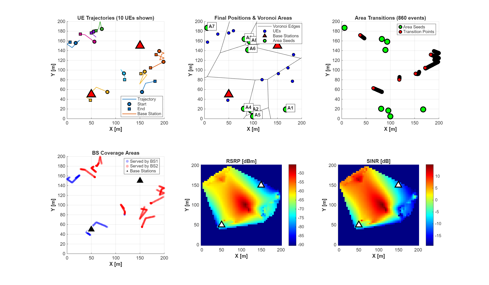
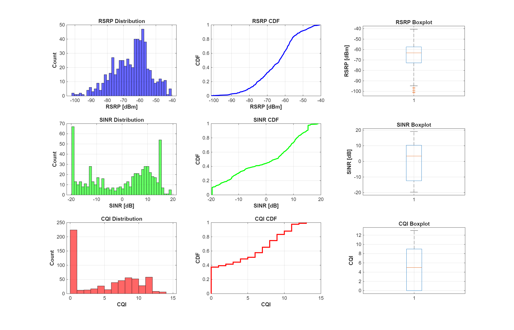
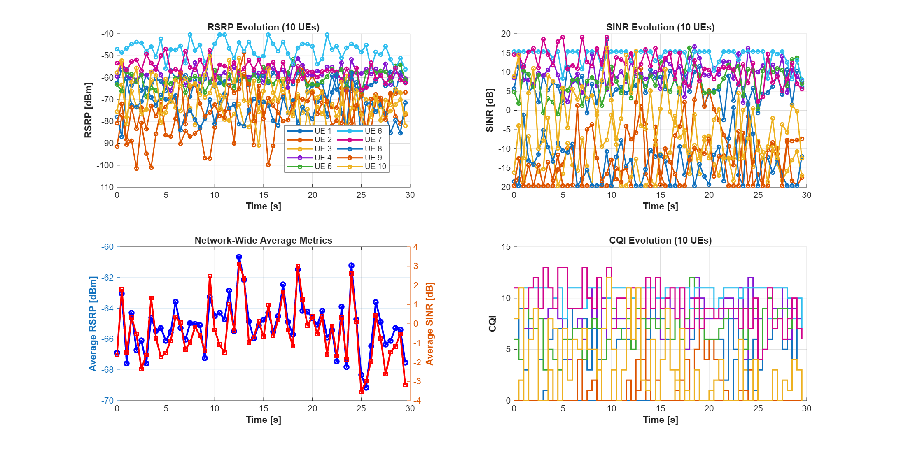
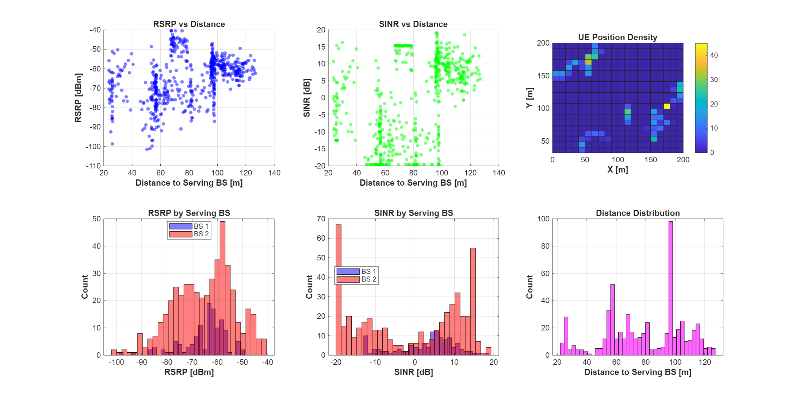
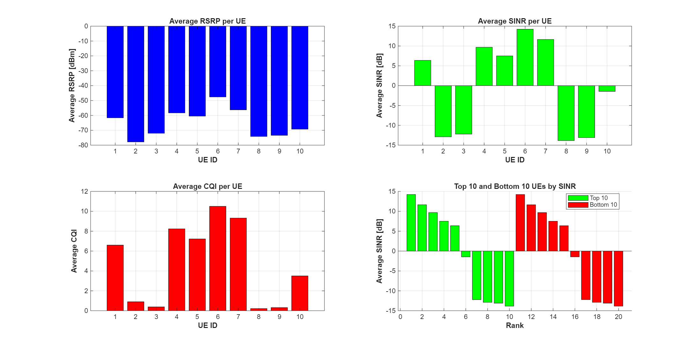
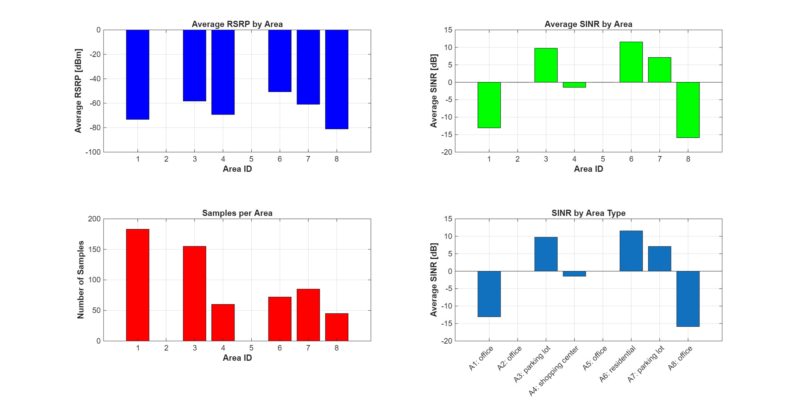
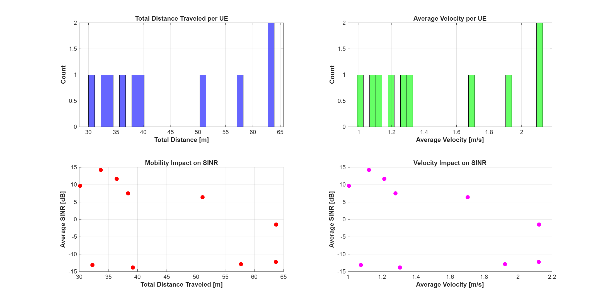
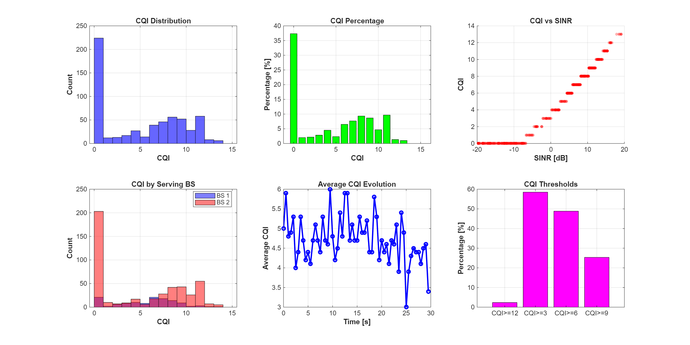

Generated: 30-Mar-2026 20:49:24
Output Directory: ./results/simulation_20260330_204909/
| Parameter | Value |
|---|---|
| Number of UEs | 10 |
| Number of BSs | 2 |
| Simulation Duration | 30 seconds (0.5 min) |
| Frequency | 3.50 GHz |
| BS MIMO | 64x64 (8x8 array) |
| UE MIMO | 4x4 (2x2 array) |
| Total CSI Reports | 600 |
| Metric | Mean | Std Dev | Min | Max |
|---|---|---|---|---|
| RSRP [dBm] | -65.09 | 11.42 | -101.40 | -40.50 |
| SINR [dB] | -0.41 | 12.26 | -19.67 | 19.09 |
| CQI | 4.72 | - | - | - |








csv/all_ues_combined.csv - All UE datacsv/ue_001.csv to csv/ue_010.csv - Individual UE datafigures/01_network_overview.pngfigures/02_csi_distributions.pngfigures/03_temporal_evolution.pngfigures/04_spatial_analysis.pngfigures/05_per_ue_performance.pngfigures/06_area_analysis.pngfigures/07_mobility_analysis.pngfigures/08_cqi_analysis.pngReport generated by ResultsManager - QuaDRiGa Massive MIMO Simulation